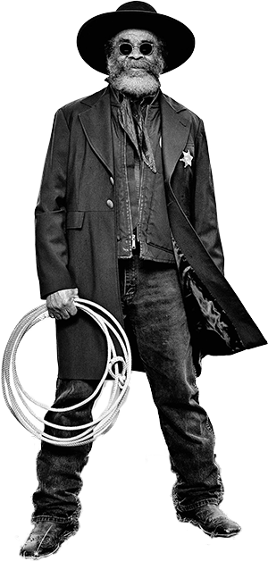
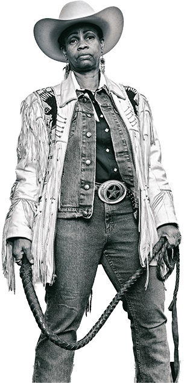

Arthur "J.R." Fulmore, of the Federation of Black Cowboys
Organizations like the Black Cowboy Federation prove that the link between black culture and the Old West is not just a thing of the past but also a thing of the present.

"Mama" Kesha Morse, of the Federation of Black Cowboys